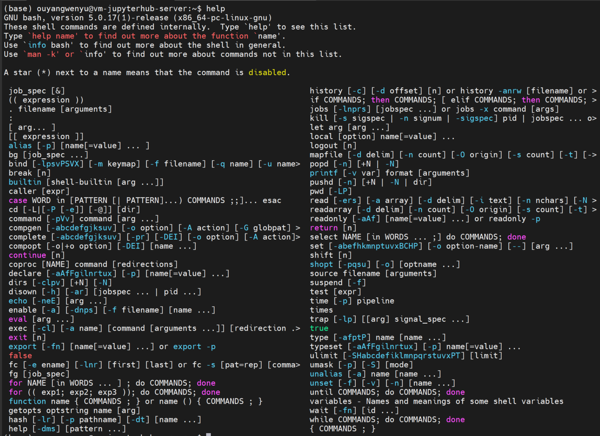
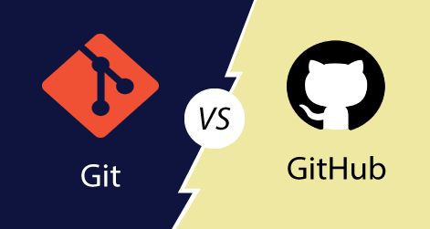

常用工具#
工作流中涉及的工具主要是能够帮助记录、自动化和共享工作的工具：
记录工作流，这样其他人和未来的自己就可以理解现在的工作流程
自动化工作流，以便其他人和未来的自己可以复制它们。
共享工作流，与他人协作
使用开源、免费的编程语言编程是开始构建可复现且易于共享的工作流的有效且高效方式。具体地。我们选择Python编程语言作为本教程的最主要编程语言，因为Python学习起来比较简单，相关资源也很丰富，能较好地满足日常科研所需。从Python开始，大家可以再根据实际需要去学习其他编程语言。
在正式开始具体地编程工作前，我们先先看看三类编程相关的常用工具：Bash、Git/GitHub、Jupyter。
1 使用 Shell（Linux Bash）操作和管理文件#
Shell是计算机用来接收代码（即命令）并返回通过执行这些命令（即输出）生成的信息的程序。这些命令可以通过终端 Terminal（也称为命令行界面 CLI）输入。

使用Shell能帮助我们：
访问和管理文件和文件夹（即目录）
一次高效地处理多个文件和目录
运行程序，例如用于版本控制的程序git
如果需要在高性能计算群集 或云远程计算机（你可以认为我们的平台就是个远程计算机）上工作，Shell也很重要。在下一节，我们就将学习如何访问和管理计算机上的文件，以及启动或运行其他程序，我们主要使用Linux的Bash。
2 使用 Git 和 GitHub 进行版本控制和协作#
Git能帮助我们监视和跟踪文件中的更改，这一过程就是版本控制。Git 提供了一种为项目创建和跟踪“存储库”的方法，即保存所有相关文件的文件夹。GitHub 是一个托管 git 存储库的云平台，它允许我们存储和管理文件并跟踪更改。GitHub 还包括项目管理等功能，这些功能在处理协作项目时很有用。例如，使用git在本地处理文件，然后将更改上传到GitHub网站. 如果公开代码库，那么其他人可以在 GitHub 上找到它并为该代码做出贡献，这使其成为协作和共享的理想选择。GitHub 对于代码审查也很有用，因为其他人可以评论工作流程的更改，我们可以选择接受或拒绝提议的更改。
本教程后面专门有一章节来介绍如何使用git/GitHub工作流来实现文件的版本控制、共享工作以及与他人协作。

3 Jupyter 项目#
jupyter 项目是从 IPython 项目演变而来的开源项目，旨在支持交互式数据科学和计算。虽然该项目是从 Python 发展而来的，但它被设计为与语言无关，支持许多不同的编程语言，包括Julia、Python、R等。Jupyter 平台已被科研界广泛采用。

与 Jupyter 相关的三个核心工具是：
Jupyter Notebook： Jupyter Notebook 是一个基于浏览器的开源应用程序，使用它我们能创建和共享包含实时代码、方程式、可视化和叙述性文本的文档。
JupyterLab： JupyterLab 是一个基于浏览器的 Jupyter 笔记本、代码和数据的交互式开发环境。
JupyterHub：可以在服务器上运行的多人版 Jupyter Lab。团队专门构建了一个内网访问的Jupyterhub云平台
在JupyterHub上我们注册登陆自己的账号，然后就可以使用 JupyterLab编辑Jupyter Notebook 文件组织和记录我们的工作流（访问数据、方法和结果输出）了。
在这本教科书中，我们将使用Jupyter Notebook编写Python，实现工作流的自动化，通过记录数据输入、用于分析和可视化的代码以及结果的文档来支持开放的可重复科学，还可以轻松地与其他人共享我们的工作。